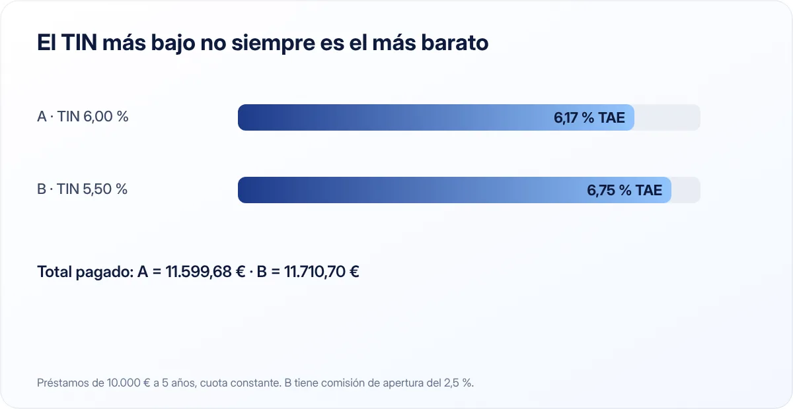

TIN y TAE: qué son, en qué se diferencian y cuál debes mirar
Son las dos siglas que aparecen en cualquier préstamo, tarjeta, cuenta o depósito. Entender la diferencia evita que una oferta "barata" te salga cara.

Puntos clave
- El TIN es el tipo de interés pactado, sin gastos ni comisiones.
- La TAE incluye la frecuencia de pago de intereses y, en préstamos, comisiones y gastos obligatorios.
- Para comparar productos, usa siempre la TAE.
El TIN: el tipo de interés "a secas"
El TIN (Tipo de Interés Nominal) es el porcentaje que el banco te cobra por un préstamo o te paga por tus ahorros, tal como se pacta en el contrato. Es el precio puro del dinero, sin tener en cuenta nada más.
Si un depósito tiene un TIN del 3 % y metes 10.000 € durante un año, recibirás 300 € de intereses brutos, siempre que los intereses se paguen una sola vez al final del año.
La TAE: el coste o rendimiento real
La TAE (Tasa Anual Equivalente) es un indicador que permite comparar productos de forma homogénea. Tiene en cuenta:
- El TIN.
- La frecuencia con la que se pagan o cobran los intereses (mensual, trimestral, anual).
- En préstamos y créditos, las comisiones y gastos obligatorios: comisión de apertura, de estudio, y ciertos gastos vinculados.
Las entidades están obligadas a informar de la TAE en su publicidad y en la documentación precontractual, precisamente para que puedas comparar.
Por qué la frecuencia importa
Si los intereses se pagan cada mes, esos intereses empiezan a generar a su vez nuevos intereses (es el interés compuesto). Por eso, con el mismo TIN, la TAE es mayor cuanto más frecuente es la liquidación:
| TIN | Liquidación | TAE |
|---|---|---|
| 3,00 % | Anual | 3,00 % |
| 3,00 % | Trimestral | 3,03 % |
| 3,00 % | Mensual | 3,04 % |
En ahorros, la diferencia es pequeña. En préstamos, donde además se suman comisiones, puede ser mucho mayor.
TIN y TAE en un préstamo

Imagina dos préstamos personales de 10.000 € a cinco años:
- Préstamo A: TIN 6 %, sin comisión de apertura.
- Préstamo B: TIN 5,5 %, con comisión de apertura del 2,5 %.
A primera vista, el B parece más barato porque su TIN es menor. Pero la comisión de apertura (250 €) se paga al principio y hace que el coste real suba:
| Préstamo A | Préstamo B | |
|---|---|---|
| TIN | 6,00 % | 5,50 % |
| Comisión de apertura | 0 € | 250 € |
| Cuota mensual | 193,33 € | 191,01 € |
| Total pagado (cuotas + comisión) | 11.599,68 € | 11.710,70 € |
| TAE aproximada | 6,17 % | 6,75 % |
El préstamo con el TIN más bajo es, en realidad, el más caro. Por eso existe la TAE: integra todo en una sola cifra comparable.
Cálculo con cuotas mensuales constantes (sistema francés) y sin otros gastos.
Para comparar dos productos del mismo tipo, mira la TAE. Para saber cuánto vas a pagar exactamente cada mes, mira el TIN y el cuadro de amortización.
Lo que la TAE no incluye
La TAE es muy útil, pero no lo dice todo:
- En préstamos, puede no incluir algunos gastos, como ciertos seguros opcionales o productos vinculados que el banco te "recomienda".
- En hipotecas variables, la TAE se calcula suponiendo que el índice de referencia no cambia, algo que casi nunca ocurre.
- En cuentas remuneradas, no refleja límites de saldo ni promociones temporales: una TAE alta durante tres meses no es lo mismo que todo el año.
Por eso, además de la TAE, revisa siempre el coste total del préstamo (lo que habrás pagado al final) o el rendimiento real de tu dinero teniendo en cuenta las condiciones.
Un truco para tarjetas y préstamos rápidos
En tarjetas revolving y microcréditos, la TAE puede ser muy alta. Una cifra de dos dígitos en un préstamo al consumo es una señal clara para comparar alternativas o, directamente, buscar otra forma de financiarte. Si ya tienes deudas de este tipo, nuestra guía para salir de deudas te ayudará a ordenarlas.
Checklist antes de firmar
- Compara la TAE de al menos tres ofertas del mismo tipo de producto.
- Pide el coste total del préstamo y el cuadro de amortización.
- Pregunta qué productos vinculados son obligatorios y cuáles opcionales.
- Revisa las comisiones: apertura, amortización anticipada, mantenimiento.
- Lee la Ficha de Información Precontractual antes de firmar.
En resumen
El TIN es el tipo de interés pactado; la TAE es el que te permite comparar porque incluye la frecuencia de pago y, en préstamos, las comisiones obligatorias. Compara siempre por TAE, pero no olvides mirar el coste total y la letra pequeña. Para tus ahorros, aplícalo al elegir entre cuenta remunerada o depósito.
Fuentes consultadas
Este artículo es informativo y no constituye asesoramiento financiero, fiscal ni jurídico personalizado. Las cifras son orientativas y pueden cambiar; consulta las fuentes oficiales y, si lo necesitas, a un profesional. Cómo elaboramos nuestras guías.